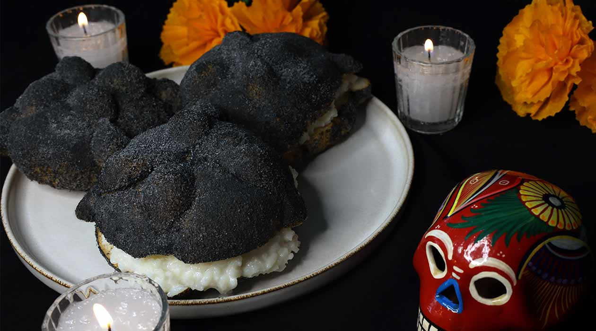

Pan de Muerto
El protagonista indiscutible. Es un pan dulce horneado con un toque de azahar o anís. Su forma circular representa el ciclo de la vida y la muerte, y las tiras de masa en la parte superior simulan los huesos y las lágrimas derramadas por los difuntos.